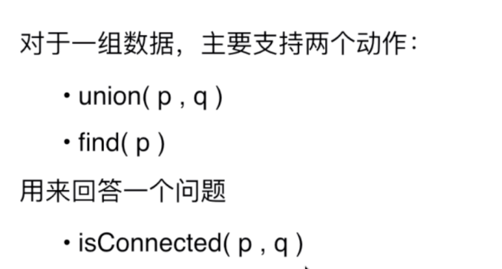
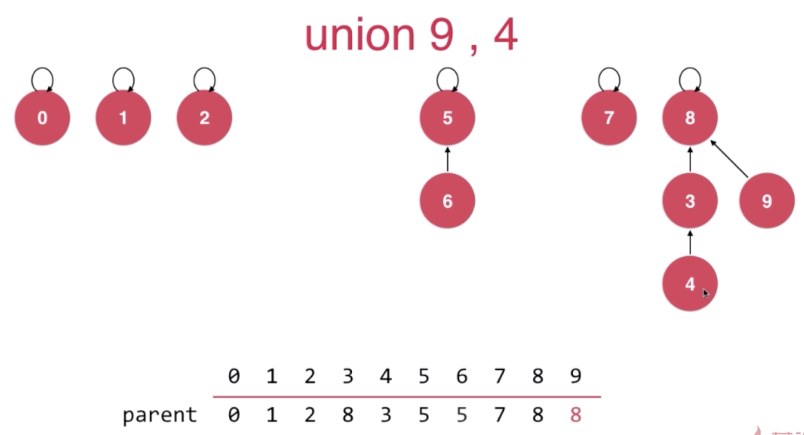
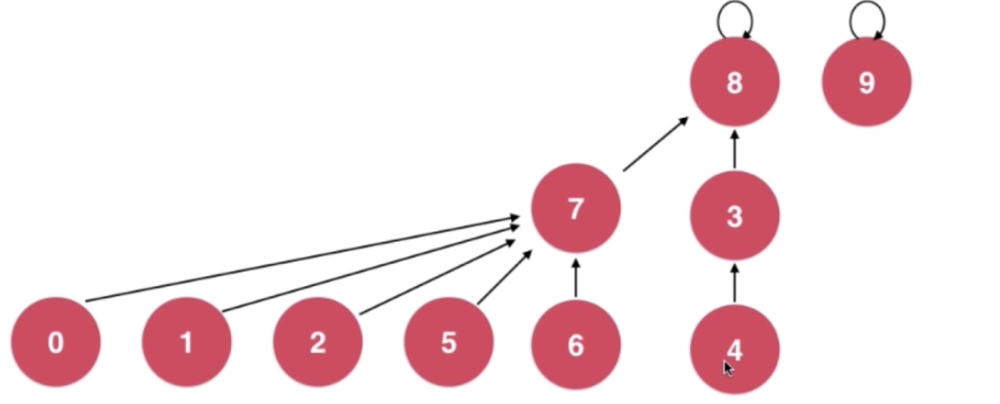
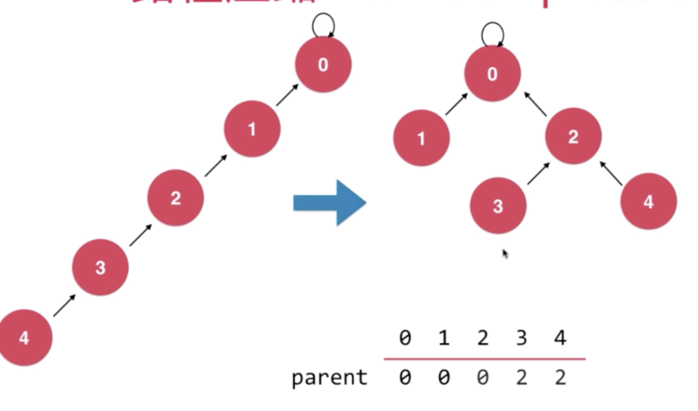
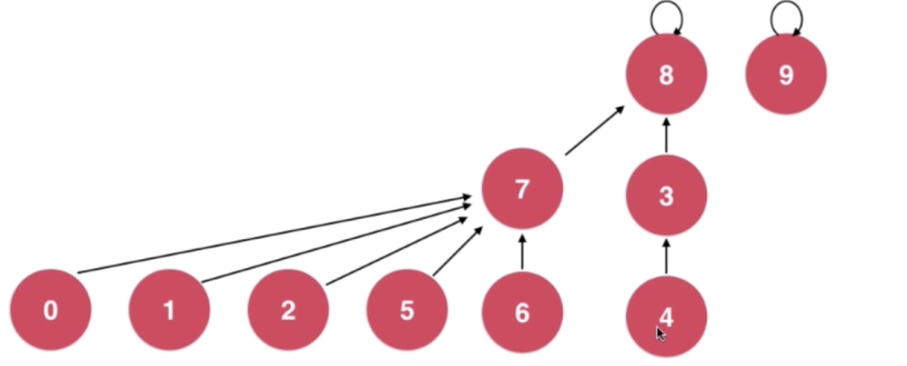
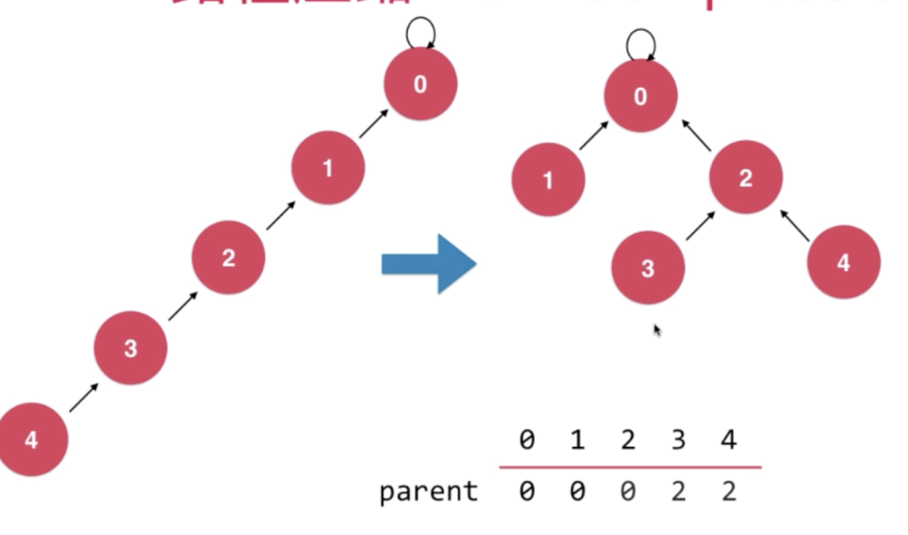
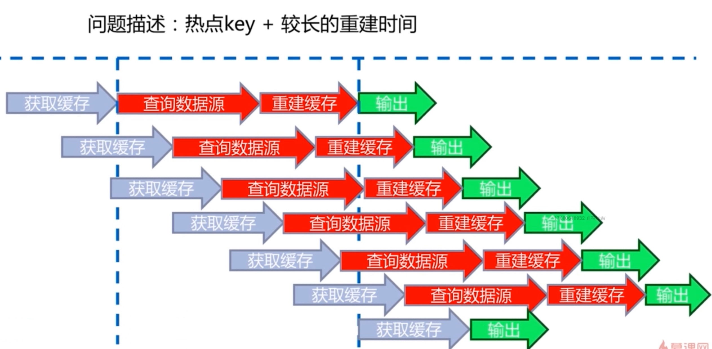

并查集
连接问题
- 网络是个抽象的概念：用户之间形成的网络
- 数学中的集合类实现
连接问题&路径问题
- 和二分查找作比较
- 和select作比较
- 和堆作比较
Quick find
- 
quick find
- 
uf3

uf4


生命的意义是成为你自己！


int main(int argc, char* argv[]){
int i = 0;
int arr[4] = {0};
for(; i<=3; i++){
arr[i] = 0;
printf("hello world\n");
}
return 0;
}
XADD mqstream * repo 5
"1599203861727-0"

TS.CREATE device:temperature RETENTION 600000 LABELS device_id 1
OK
TS.ADD device:temperature 1596416700 25.1
1596416700
TS.GET device:temperature
25.1
TS.MGET FILTER device_id!=2
1) 1) "device:temperature:1"
2) (empty list or set)
3) 1) (integer) 1596417000
2) "25.3"
2) 1) "device:temperature:3"
2) (empty list or set)
3) 1) (integer) 1596417000
2) "29.5"
3) 1) "device:temperature:4"
2) (empty list or set)
3) 1) (integer) 1596417000
2) "30.1"
TS.RANGE device:temperature 1596416700 1596417120 AGGREGATION avg 180000
1) 1) (integer) 1596416700
2) "25.6"
2) 1) (integer) 1596416880
2) "25.8"
3) 1) (integer) 1596417060
2) "26.1"


redis-cli -h $master -p 6379 cluster meet $master 6380
redis-cli -h $master -p 6379 cluster meet $node1 6379
redis-cli -h $master -p 6379 cluster meet $node1 6380
redis-cli -h $master -p 6379 cluster meet $node2 6379
redis-cli -h $master -p 6379 cluster meet $node2 6380
#!/bin/bash
master=192.168.31.186
node1=192.168.31.224
node2=192.168.31.125
start=$1
last=$2
port=$4
h=$3
ip=""
case $h in
"master") ip=$master;;
"node1") ip=$node1;;
"node2") ip=$node2;;
esac
for slot in `seq ${start} ${last}`
do
echo "slot:${slot}}"
redis-cli -h ${ip} -p ${port} cluster addslots ${slot}
done
./slot.sh 0 5461 master 6379 && ./slot.sh 5462 10922 node1 6379 && ./slot.sh 10923 10683 node2 6379
redis-cli -p 6379 cluster replicate 1da43f4f45d110b849bdfbc0fc55dc311fa69a76
redis-cli -p 6380 cluster replicate 261b726a6cafacddbf8f23596c738bdf4a30f085
redis-cli -c -p 6379
Redirected to slot [4554] located at 192.168.31.186:6379
查看节点 redis-cli -p 6380 cluster nodes
查看槽 redis-cli -p 6380 cluster slots
查看信息 redis-cli -p 6380 cluster info
//启动节点
master redis-server ./redis-master_6379.conf \
&& redis-server ./redis-master_6380.conf
node1 redis-server ./redis-master_6379.conf \
&& redis-server ./redis-master_6380.conf
node2 redis-server ./redis-master_6380.conf \
&& redis-server ./redis-master_6381.conf
//创建集群
redis-cli --cluster create --cluster-replicas 1 \
$master:6379 $master:6380 \
$node1:6379 $node1:6380 \
$node2:6380 $node2:6381


